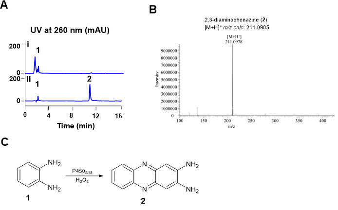
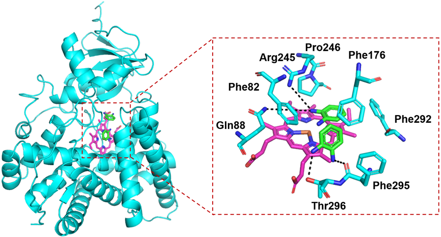
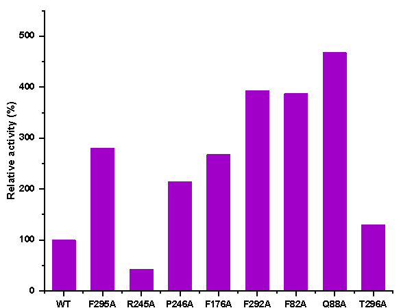
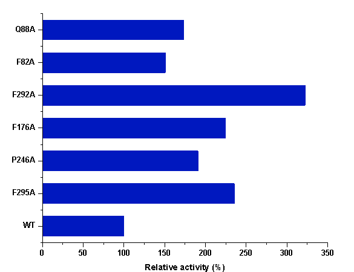

In vitro activity of P450S18
Using the CYP152 family P450 enzyme P450SPα as the probe, a homolog protein P450S18 was successfully identified from a deepsea-derived microorganism. We then amplified the sequences encoding P450S18, and cloned it into pET28a. The soluble form of P450S18 (48.4 KDa) were obtained in Escherichia coli BL21 (DE3) (Fig S1). We then tested the catalytic activities of P450S18 toward different small molecule compounds containing benzene rings (Fig S2), using H2O2 as the cofactor. Surprisingly, in the presence of H2O2, P450S18 could transform OPD (1) to 2,3-diaminophenazine (2) (Fig 2). Phenazines are a class of heterocyclic nitrogenous aromatics featuring a dibenzopytazine core.[13] These compounds displayed a wide range of bioactivities, including antimicrobial, antifungal, antitumor, etc. [13] It is reported that the formation of natural phenazines need multiple steps and enzymes.[14] While P450S18 could transform OPD (1) to 2,3-diaminophenazine (2) directly through C‒N bond construction, demonstrating its potential use for phenazines construction. Therefore, we next engineered P450S18 for better catalytic activities toward the substrate OPD (1).
Figure 2. In vitro characterization of P450S18 toward OPD (1).(A) HPLC profiles of in vitro assays of P450S18 toward OPD (1). (i) 0.5 mM OPD (1) + 10 mM H2O2; (ii) 0.5 mM OPD (1) + 10 mM H2O2 + 10 μM P450S18. The reactions were incubated at 30 ℃ for 2 h. (B) HRMS analysis of 2,3-diaminophenazine (2). (C) The reaction scheme of P450S18 toward OPD (1).
Identification of the candidate residues of P450S18 for directed evolution
To investigate the potential substrate binding residues in P450S18, we first modeled its protein structure using Alphafold 3. P450S18 adopted a typical triangular-shaped P450-fold. Furthermore, we constructed a substrate binding model of two OPD (1) molecules in P450S18 through Autodock vina. As shown in Fig 3, two OPD molecules were present in front of the heme center. The amino groups of two substrates form hydrogen bonds with Thr296, Phe295, Gln88 and Arg245. Moreover, the substrates were stabilized through lots of p- π and π-π interactions with Phe295, Phe292, Phe176, Pro246 and Phe82. Based on the substrate binding modes, we speculate that these residues may be involved in the catalytic activity of P450S18 toward OPD (1). Therefore, we selected Phe295, Arg245, Pro246, Phe176, Phe292, Phe82, Gln88 and Thr296 for further directed evolution studies.
Figure 3. Binding modes of the P450S18 with OPD (1).The substrate OPD was shown as green sticks; the heme center was shown as magenta sticks; and the residues of P450S18 were depicted as cyan sticks.
Alanine scanning and reaction activity screening of mutants
We then used alanine scanning of the substrate binding-related residues to engineer P450S18. We constructed seven mutants F82A, Q88A, F176A, P246A, R245A, F295A, T296A andF292A. Reverse complementary primers with mutation sites were designed to amplify the linear expression plasmids (pET28a/P450S18) with mutated sequences. The resulting linear plasmids were ligated to circular molecules by seamless cloning, and then introduced into E. coli BL21 (DE3). The expression strains were individually cultured, followed by addition of 0.2 mM IPTG to induce protein expression (Fig S3). Crude enzymes from each expression strain was incubated with H2O2 and OPD (1) for 2 h, and the generation of 2,3-diaminophenazine (2) was detected by HPLC. As shown in Fig 4, compared to that of the wild-type P450S18, the catalytic activities of F295A, P246A, F176A, F292A, F82A, and Q88A toward OPD (1) increased by ~2-5 fold (Fig 4). 
Figure 4. The relative activities of the crude enzymes of P450S18 and its variants.
In vitro characterization of the P450S18 variants F295A, P246A, F176A, F292A, F82A and Q88A
In order to accurately evaluate the catalytic efficiencies of the variants selected, we purified the P450S18 variants F295A, P246A, F176A, F292A, F82A and Q88A (Fig S4). We tested the catalytic activities of the mutants and wild-type enzyme toward OPD (1) in the presence of H2O2. As shown in Fig 5, compared to the wild-type enzyme, all of the selected mutants increased the catalytic efficiency toward OPD (1). F82A and Q88A increased by ~1.5-fold; F295A, P246A and F176A increased by ~2.2-fold; while F292A exhibited the highest catalytic ability, which increased by ~3.5-fold. We proposed that the increased activities of mutants may due to the reduction of steric hindrance. These results indicated that engineering of the binding residues could significantly increase the catalytic activity of P450S18 toward OPD (1).
Figure 5 The relative activities of P450S18 and its mutants.